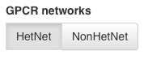
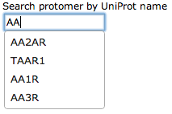
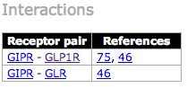

This web site was developed and designed by:
We would like to thank Michael Di Palma for his support in bibliographic reference gathering.
If you encounter any difficulties as you use it or have any comments, please send us your feedback to Dasiel.Borroto-Escuela (at) ki (dot) se.
Welcome to the GPCR Interaction Networks!

You might also be interested in seeing the interaction and non-interactions of a specific receptor (let's call it the target receptor). We provide you two ways to achieve this.

In both cases a new subnetwork is drawn in which the target receptor and its interactions/non-interactions are shown.
The site also contains three other panels. In the bottom-left panel we show the map between receptor families and network node colours. In the bottom-right corner we provide some topological properties of the network being shown.
The top-right panel is not always visible. It only provides information about a subnetwork for a given target receptor. For every receptor in the subnetwork we enlist the bibliographic references that claim the fact that it does/doesn't interact with the target receptor.

For instance, the image above shows the reference list in the HetNet subnetwork for GIPR receptor.